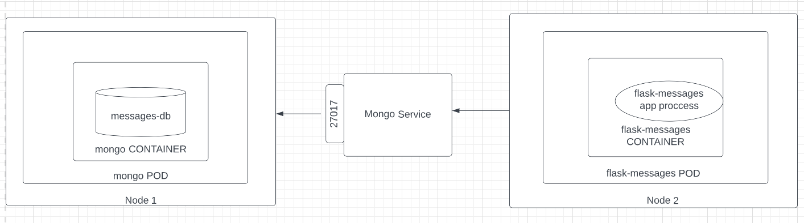

Comunicacion de dos PODS con un service NodePort¶
En este laboratorio se creara un servicio NodePort para que un pod pueda alcanzar a otro usando un SVCHOST.

-
Para este laboratorio se creo una apliacion en flask que se conecta a una base de datos mongo, esta app tiene dos rutas, enviar mensaje, leer mensajes, los mensajes se guardan en la base de datos.
#save as app.py from flask import Flask from flask import jsonify from pymongo import MongoClient app = Flask(__name__) # se usa el host del Servicio NodePort client = MongoClient("mongo.default.svc.cluster.local",27017) db = client.test_db @app.route("/") def hello(): return "works" @app.route("/send_message/<sender>/<to>/<message>") def send_message(sender,to,message): return str(db.messages.insert_one({'to':to,'message':message,'from':sender}).inserted_id) @app.route("/get_messages/<to>") def get_messages(to): messages = list(db.messages.find({"to":to},{"_id":0})) if messages: db.messages.delete_many({"to":to}) print(messages) return jsonify(messages ) -
Escribir el
Dockerfile -
Crear la imagen
santos/flask-messages-app-with-mongoa partir delDockerfile, apuntar al registry deminikube.
-
Yaml de creacion de los dos
podsusandoDeployments# save as ./deployment.yaml apiVersion: apps/v1 kind: Deployment metadata: name: flask-messages namespace: default spec: selector: matchLabels: app: flask-messages replicas: 1 # template: metadata: labels: app: flask-messages spec: containers: - name: flask-messages image: santos/flask-messages-app-with-mongo imagePullPolicy: Never ports: - containerPort: 5000 --- # Deploy de la db apiVersion: apps/v1 kind: Deployment metadata: name: mongo namespace: default spec: selector: matchLabels: app: mongo replicas: 1 # template: metadata: labels: app: mongo spec: containers: - name: mongo image: mongo imagePullPolicy: IfNotPresent ports: - containerPort: 27017 -
Ejecutar el
deploment.yaml -
Revisar el estado del cluster
-
Yaml de creacion de servicios, uno para que la aplicacion pueda acceder a la db con un
hostnamey otra para poder acceder a la aplicacion desde la maquina local.
#save as ./services.yaml
apiVersion: v1
kind: Service
metadata:
name: mongo
namespace: default
spec:
ports:
- port: 27017
protocol: TCP
targetPort: 27017
selector:
app: mongo
type: NodePort
---
apiVersion: v1
kind: Service
metadata:
name: flask-messages
namespace: default
spec:
ports:
- port: 5000
protocol: TCP
targetPort: 5000
selector:
app: flask-messages
type: NodePort
-
Crear los servicios
services.yaml -
Revisar el estado del cluster
$ kubectl get services
# NAME TYPE CLUSTER-IP EXTERNAL-IP PORT(S) AGE
# flask-messages NodePort 10.109.12.181 <none> 5000:31377/TCP 46m
# kubernetes ClusterIP 10.96.0.1 <none> 443/TCP 96m
# mongo NodePort 10.97.20.81 <none> 27017:31644/TCP 46m
flask-messages se debe obtener la url de acceso usando minikube
- Usar la aplicacion